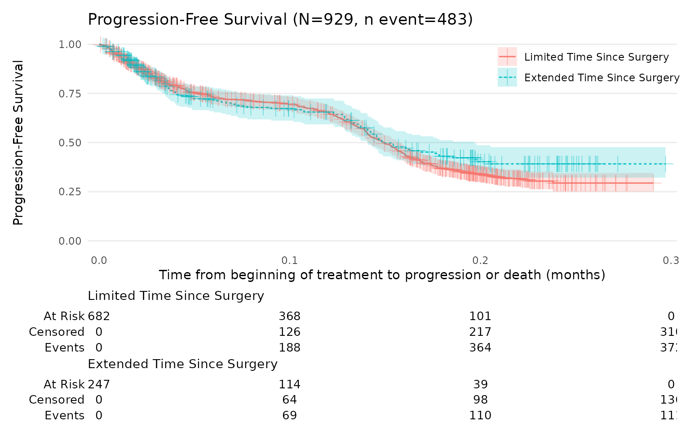
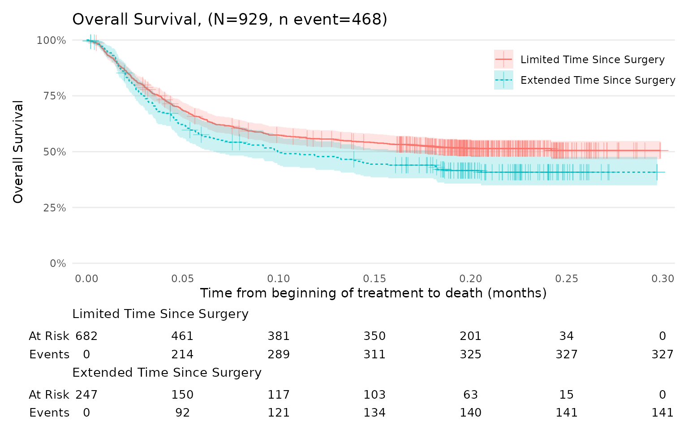

Kaplan-Meier Guideline Suggestions
Livia Pierotti
2024-11-26
Source:vignettes/kaplan_meier.Rmd
kaplan_meier.RmdIntroduction
This vignette illustrates the implementation of Kaplan-Meier survival
analysis in R using the survival and ggsurvfit packages.
The Kaplan-Meier method is a standard approach in clinical research for
estimating survival functions and comparing time-to-event outcomes
between groups.
In this example, two key survival endpoints are analysed:
Progression-Free Survival (PFS): Defined as the time from treatment initiation to either disease progression or death.
Overall Survival (OS): Defined as the time from treatment initiation to death from any cause.
This vignette covers the following steps:
Preparation of the dataset.
Creation of time-to-event and event indicator variables.
Fitting of Kaplan-Meier models.
Visualization of survival curves accompanied by risk tables.
The approach presented here follows the recommendations provided by
Daniel Sjoberg’s ggsurvfit package for generating
publication-ready Kaplan-Meier plots.
First, install packages if needed and load them.
Data Preparation
Data Overview
The dataset used is an extension of the dataset provided by the
ggsurvfit package. Additional variables were simulated to
resemble to a typical dataset from an oncology clinical study, including
information on progression status, survival times, and treatment
characteristics. Note: In this example, the end date is
determined using the pmax() function, which selects the
latest available date from the following: date of death, last visit,
last RECIST scan, last patient contact, end of treatment, or last
follow-up.
## Display dataset
head(data_surv)
#> # A tibble: 6 × 6
#> id death date_start date_progression date_end surg
#> <dbl> <dbl> <date> <date> <date> <fct>
#> 1 1 1 2021-04-16 2021-04-18 2021-04-19 Limited Time Since Surgery
#> 2 2 0 2021-05-20 2021-05-25 2021-05-28 Limited Time Since Surgery
#> 3 3 1 2021-03-27 NA 2021-03-28 Limited Time Since Surgery
#> 4 4 1 2021-05-14 NA 2021-05-15 Extended Time Since Surgery
#> 5 5 1 2021-05-27 NA 2021-05-28 Extended Time Since Surgery
#> 6 6 1 2021-06-06 NA 2021-06-09 Limited Time Since Surgery
dim(data_surv)
#> [1] 929 6Variable Creation
The purpose of this section is to create status and time status and time variables for Progression-Free Survival (PFS) and Overall Survival (OS).
First, the variables time and status (indicating whether an event occurred or was censored) need to be created to enable the use of various functions.
-
Time variable:
The time variable represents the duration from a defined starting point (e.g., diagnosis, study enrollment, or start of treatment) to the time at which the patient’s status is recorded (e.g. death, disease progression, recurrence or last news). It is a numeric variable measured in units such as days, months, or years, depending on the study’s duration and requirements.
Status variable: The status variable is binary, indicating whether the event has occurred (event = 1) or not (censored = 0) for each subject by the end of the study period.
An event (1) indicates that the subjects experienced the event of interest (e.g., death, relapse, transplant failure, etc.).
Censored (0) refers to those subjects who did not experience the event during the study. For these individuals, the ‘time-to-event’ is considered censored, indicating that we only know they did not experience the event up to a certain point.
## Example
data_surv_v2 = data_surv %>%
mutate(
status_PFS = ifelse(!is.na(date_progression), 1, 0 ),
date_status_pfs = pmin(date_progression,date_end, na.rm = TRUE),
status_OS = death,
date_status_OS = date_end,
time_pfs = as.numeric(date_status_pfs-date_start)/30.5,
time_OS = as.numeric(date_status_OS-date_start)/30.5
) %>%
select(id,time_pfs,time_OS,status_PFS,status_OS,surg)
head(data_surv_v2)
#> # A tibble: 6 × 6
#> id time_pfs time_OS status_PFS status_OS surg
#> <dbl> <dbl> <dbl> <dbl> <dbl> <fct>
#> 1 1 0.0611 0.0869 1 1 Limited Time Since Surgery
#> 2 2 0.175 0.277 1 0 Limited Time Since Surgery
#> 3 3 0.0487 0.0487 0 1 Limited Time Since Surgery
#> 4 4 0.0220 0.0220 0 1 Extended Time Since Surgery
#> 5 5 0.0469 0.0469 0 1 Extended Time Since Surgery
#> 6 6 0.0811 0.0811 0 1 Limited Time Since SurgeryKaplan-Meier Analysis
Generate survival estimates using survfit2()
We recommend using the ggsurvfit package which uses
survfit2()with the following syntax:
km.model_PFS = survfit2(Surv(time_pfs, status_PFS) ~ surg,data = data_surv_v2)
km.model_PFS
#> Call: survfit(formula = Surv(time_pfs, status_PFS) ~ surg, data = data_surv_v2)
#>
#> n events median 0.95LCL 0.95UCL
#> surg=Limited Time Since Surgery 682 372 0.149 0.141 0.157
#> surg=Extended Time Since Surgery 247 111 0.149 0.141 0.197
tidy_survfit(km.model_PFS, times = c(0.05, 0.10, 0.20)) %>%
select(strata, time, n.risk, n.event, estimate, conf.high, conf.low)
#> # A tibble: 6 × 7
#> strata time n.risk n.event estimate conf.high conf.low
#> <fct> <dbl> <dbl> <dbl> <dbl> <dbl> <dbl>
#> 1 Extended Time Since Surgery 0.05 136 60 0.723 0.786 0.665
#> 2 Extended Time Since Surgery 0.1 114 9 0.673 0.741 0.612
#> 3 Extended Time Since Surgery 0.2 39 41 0.403 0.486 0.333
#> 4 Limited Time Since Surgery 0.05 429 156 0.753 0.788 0.720
#> 5 Limited Time Since Surgery 0.1 368 32 0.695 0.733 0.659
#> 6 Limited Time Since Surgery 0.2 101 176 0.337 0.382 0.298Generate survival curves
For full documentation on ggsurvfit, visit the ggsurvfit
website.
To cite their work, refer to the following:
Sjoberg D, Baillie M, Fruechtenicht C, Haesendonckx S, Treis T (2025). ggsurvfit: Flexible Time-to-Event Figures.
R package version 1.1.0. Available at: https://www.danieldsjoberg.com/ggsurvfit/.
Progression-Free Survival (PFS)
km_PFS = survfit2(Surv(time_pfs, status_PFS) ~ surg, data = data_surv_v2) %>%
ggsurvfit(linetype_aes = TRUE) +
add_confidence_interval() +
add_risktable(
risktable_stats = c("n.risk", "cum.censor", "cum.event" )
) +
theme_ggsurvfit_KMunicate() +
scale_y_continuous(limits = c(0, 1)) +
scale_x_continuous(expand = c(0.02, 0)) +
theme(legend.position="inside", legend.position.inside = c(0.85, 0.85))
km_PFSThis plot can be further customised, for example:
km_PFS +
add_censor_mark(size = 4, alpha = 0.4) +
labs(
x = "Time from beginning of treatment to progression or death (months)",
y = "Progression-Free Survival",
title = "Progression-Free Survival, (N=929, n event=440)"
) 
Overall Survival (OS)
The function scale_ggsurvfit() can be used to
automatically adjust the axes limits of Kaplan-Meier plots to better fit
the data and improve visualisation. Note: The
scale_ggsurvfit() function automatically scales the y-axis
in percentage.
km_OS = survfit2(Surv(time_OS, status_OS) ~ surg, data = data_surv_v2) %>%
ggsurvfit(linetype_aes = TRUE) +
add_confidence_interval() +
add_risktable(
risktable_stats = c("n.risk", "cum.event" )
) +
theme_ggsurvfit_KMunicate() +
scale_ggsurvfit()+
theme(legend.position = "inside", legend.position.inside = c(0.85, 0.85))
km_OS +
add_censor_mark(size = 4, alpha = 0.4) +
labs(
x = "Time from beginning of treatment to death (months)",
y = "Overall Survival",
title = "Overall Survival, (N=929, n event=468)"
) 